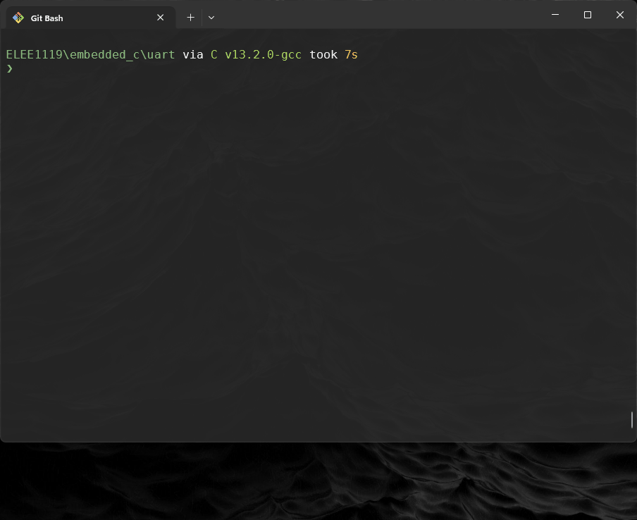
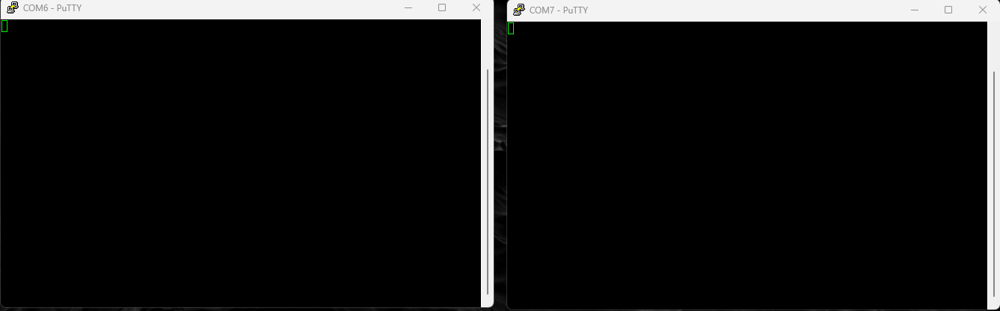

USART
So you are no doubt familiar with the well known Serial within the Arduino SDK:
#define BAUDRATE 9600 // Desired Baud Rate
char name[] = {'H','e','l','l','o',' ','w','o','r','l','d','!','\n'};
void setup() {
Serial.begin(BAUDRATE);
}
void loop() {
for(int i = 0; i < 13;i++){
Serial.print(name[i]);
}
delay(1000);
}
There is a lot of abstraction happening here, where are the ports/registers?
Let's now turn this into an embedded program!
The USART (Universal Synchronous and Asynchronous serial Receiver and Transmitter) module on the ATmega328P is used for serial communication. It allows the microcontroller to send and receive data over a single data line (full-duplex communication) in both synchronous and asynchronous modes.
In asynchronous mode, which is commonly used for UART, data is transferred in bytes, framed with start and stop bits, and synchronized with a clock frequency derived from the system clock. The USART has several registers to manage transmission, reception, baud rate configuration, and framing.
Note:
- All information provided in this chapter is summariesd and expanded upon via: https://ww1.microchip.com/downloads/aemDocuments/documents/MCU08/ProductDocuments/DataSheets/40001906C.pdf page 264 onwards.
UBRR0H and UBRR0L (USART Baud Rate Registers)
The UBRR (USART Baud Rate Register) is split into two 8-bit registers:
UBRR0H: The high byte of the baud rate register.UBRR0L: The low byte of the baud rate register.- Together, these registers set the baud rate for serial communication. The formula to calculate the baud prescaler value for the desired baud rate (when using 16x oversampling) is:
\[ UBRR \ =\ 103 \Leftarrow \left( \frac{ 16000000 }{ 153600 } \right) - 1 \Leftarrow \left( \frac{16\ \cdot 10^{9}}{9600 \cdot 16} \right) - 1 \Leftarrow \left( \frac{f_{osc}}{BAUD \cdot 16} \right) - 1 \]
\[ BAUD\ =\ 9600 \Leftarrow \left( \frac{ 16000000 }{ 1664 } \right) - 1 \Leftarrow \left( \frac{16\ \cdot 10^{9}}{16 * 104} \right) \Leftarrow \left( \frac{f_{osc}}{ 16 \cdot (UBRR + 1) } \right) - 1 \]
For example, with a 16 MHz clock and a baud rate of 9600, UBRRn will be 103.
UBRRn = (((16000000UL / (9600 * 16UL))) - 1) // 103
UBRR0H = (uint8_t)(UBRRn >> 8); // Set high byte
UBRR0L = (uint8_t)UBRRn; // Set low byte
Note:
- You should visit here to see the documentation of Baud rate:
UCSR0A (USART Control and Status Register A)
UCSR0A is a control and status register for the USART, providing various flags and settings:
-
UDRE0(USART Data Register Empty): This flag indicates that the data register is ready to accept new data for transmission. WhenUDRE0is set (1), it means the data register is empty and ready for a new byte.while (!(UCSR0A & (1 << UDRE0))); // Wait until UDRE0 is set (data register empty) -
TXC0(Transmit Complete): This flag indicates that the entire frame (including stop bit) has been transmitted. -
RXC0(Receive Complete): This flag indicates that unread data is available in the receive buffer. WhenRXC0is set (1), the received data is ready to be read fromUDR0.
UCSR0B (USART Control and Status Register B)
The USART Transmit Data Buffer (TXB) register and USART receive data buffer registers share the same I/O address referred to as USART data register or UDRn. The TXB will be the destination for data written to the UDR1 register location. Reading the UDRn register location will return the contents of the Receive Data Buffer Register (RXB). UCSR0B is another control register that enables and configures key features of the USART:
-
RXEN0(Receiver Enable): SettingRXEN0to 1 enables the USART receiver. This allows the microcontroller to read data from the RX pinUCSR0B |= (1 << RXEN0); // Enable receiver -
TXEN0(Transmitter Enable): SettingTXEN0to 1 enables the USART transmitter. This allows the microcontroller to send data via the TX pin.UCSR0B |= (1 << TXEN0); // Enable transmitter -
RXCIE0(Receive Complete Interrupt Enable): Enables interrupt on data reception. -
TXCIE0(Transmit Complete Interrupt Enable): Enables interrupt on transmission completion. -
UDRIE0(Data Register Empty Interrupt Enable): Enables interrupt when the data register is empty.
UCSR0C (USART Control and Status Register C)
UCSR0C configures the frame format, such as data bits, parity mode, and stop bits:
-
UCSZ01(Character Size): These bits set the data frame size (number of data bits per character).00: 5 data bits01: 6 data bits10: 7 data bits11: 8 data bits (common setting)
-
UPM01(Parity Mode): Sets the parity mode.-
00: Disabled (no parity) -
10: Even parity -
11: Odd parity -
The parity bit is calculated by doing an exclusive-or of all the data bits. If odd parity is used, the result of the exclusive or is inverted. The relation between the parity bit and data bits is as follows:
\[ P_{even}\ =\ d_{n-1} \oplus\ ...\ \oplus\ d_3\ \oplus\ d_2\ \oplus\ d_1\ \oplus\ d_0\ \oplus\ 0 \] \[ P_{odd}\ =\ d_{n-1} \oplus\ ...\ \oplus\ d_3\ \oplus\ d_2\ \oplus\ d_1\ \oplus\ d_0\ \oplus\ 1 \]
If used, the parity bit is located between the last data bit and first stop bit of a serial frame.
-
-
USBS0(Stop Bit Select): Sets the number of stop bits.- 0: 1 stop bit
- 1: 2 stop bits
-
For an 8-bit data frame, no parity, and 1 stop bit (a typical UART configuration):
UCSR0C |= (1 << UCSZ01) | (1 << UCSZ00); // 8 data bits UCSR0C &= ~(1 << USBS0); // 1 stop bit UCSR0C &= ~((1 << UPM01) | (1 << UPM00)); // No parity
UDR0 (USART Data Register)
UDR0 (USART Data Register) is the primary data register used to hold data for transmission or received data:
-
Transmit: To send data, write a byte to
UDR0. This byte is then shifted out serially on the TX pin.UDR0 = data; // Send a byte of data -
Receive: To receive data, read a byte from
UDR0. TheRXC0flag (inUCSR0A) indicates when unread data is availabledata = UDR0; // Read a byte of received data
Create uart.c
-
Change directory to
embeddedCthat was made last time and create a new child directoryuart$ cd ~/embeddedC && mkdir uart && cd uart -
Create a new file inside the the
uartdirectory calleduart.c$ touch uart.c -
Now it's time start wrighting out the program:
Code here... [57 lines]
#include <avr/io.h> // Contains all the I/O Register Macros #include <util/delay.h> // Generates a Blocking Delay #define USART_BAUDRATE 9600 // Desired Baud Rate (USBRR) #define BAUD_PRESCALER (((16000000UL / (USART_BAUDRATE * 16UL))) - 1) // 103 // Can have Synchronous or Asynchronous #define ASYNCHRONOUS (0<<UMSEL00) // USART Mode Selection, synchronous = 1 // USART parity mode (UPM) #define DISABLED (0<<UPM00) #define PARITY_MODE DISABLED // USART Parity Bit Selection, EVEN = 2, ODD = 3 // USART stop bit (USB) #define ONE_BIT (0<<USBS0) // Two bit = 1 #define STOP_BIT ONE_BIT // USART Stop Bit Selection // USART character size (UCS) buts select the number of data bits in the frame #define EIGHT_BIT (3<<UCSZ00) // 5 Bits = 0, 6 Bits = 1, 7 Bits = 2 #define DATA_BIT EIGHT_BIT // USART Data Bit Selection char name[] = {'H','e','l','l','o',' ','w','o','r','l','d','!','\n'}; void USART_Init() { // Set Baud Rate register (H)igh and (L)ow UBRR0H = BAUD_PRESCALER >> 8; // shift right by 8 bits so 103 would be 0 UBRR0L = BAUD_PRESCALER; // here would 1101010 // Set Frame Format ((U)SART (C)ontrol and (S)tatus (R)egister C) selects async or sync UCSR0C = ASYNCHRONOUS | PARITY_MODE | STOP_BIT | DATA_BIT; // Enable Receiver and Transmitter RX/TXEN Enable... (U)SART (C)ontrol and (S)tatus (R)egister B UCSR0B = (1<<RXEN0) | (1<<TXEN0); } void USART_Transmit(uint8_t DataByte) { // (U)SART (D)ata (R)egister (E)mpty if 0 empty, 1 has data while (( UCSR0A & (1<<UDRE0)) == 0) {}; // Do nothing until UDR is ready UDR0 = DataByte; // Where your byte of data goes } int main() { USART_Init(); while (1) { for(int i = 0; i < 13;i++){ USART_Transmit(name[i]); } _delay_ms(1000); } return 0; } -
We are now going to copy the
Makefilefrom theblink/created last time, and replace all instances ofblinkwithuartusing the regex feature:$ cp ../blink/Makefile . $ vim Makefile -
Inside vim type the following an press enter to find all instances of
blinkwithuart:%s/\<blink\>/uart/g
-
Remember like with blink we need to compile and upload the code to the board, ensure it is plugged in, to find the com port on windows:

-
If the COM port has changed remember to change it in the
MakefilePORT = COM# -
Use
make:make cleanmakemake upload
-
To see the output of the COM port we need to use something like
Putty:- It is preinstalled on the university machines, if you want to do it locally on your personal machine you need to download it from here:
Follow the below to set it up:

Two way communication
- Now lets set up the recieving part of the USART, and communicate between to boards, so it is best to pair up for this. Create a new file called
uart_two_way.c
-
Both programs should send and receive data between each other.
#include <avr/io.h> #define USART_BAUDRATE 9600 #define BAUD_PRESCALER (((16000000UL / (USART_BAUDRATE * 16UL))) - 1) void USART_Init() { UBRR0H = (BAUD_PRESCALER >> 8); UBRR0L = BAUD_PRESCALER; UCSR0C = (1 << UCSZ01) | (1 << UCSZ00); // 8 data bits, 1 stop bit, no parity UCSR0B = (1 << RXEN0) | (1 << TXEN0); // Enable RX and TX } void USART_Transmit(uint8_t data) { while (!(UCSR0A & (1 << UDRE0))); // Wait until the data register is empty UDR0 = data; // Load data into the register to send } uint8_t USART_Receive() { while (!(UCSR0A & (1 << RXC0))); // Wait until data is received return UDR0; // Return the received data from the register } int main() { USART_Init(); // Initialize USART while (1) { uint8_t receivedData = USART_Receive(); // Wait for data // Transmit an acknowledgment message USART_Transmit(receivedData); // } }
-
Copy the
Makefilefrom../uart/Makefiletouart_two_way/and use the regex:%s/\<uart\>/uart_two_way/g -
Compile and run on both devices, wire up:
- First wire up the Tx(board 1) to Rx (board 2)
- Ensure the boards ground pins are connected together
- Send a message
- swap the connections so that Rx(Board 1) and Tx (Board 2)
- Send a message
Note:
-
Launch Putty and see if you can send data to each other
